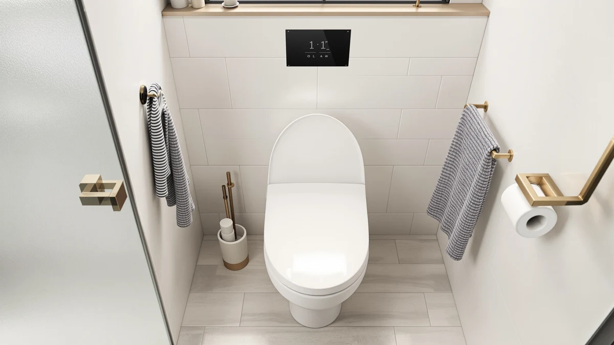

jamini Raised Toilet Seat Review (2026): Worth It?
Prices and picks verified as of November 2026. Independent, reader-supported reviews.


Quick Answer
For most people shopping for a height boost, the jamini Raised Toilet Seat 3 Inch covers the basics at a fair price, though it skips the handles and nightlight found on some of the alternatives below. We compared its price, materials and listing details against two KOHLER Rutledge seats and a handled TVOVME riser to see which one actually solves your problem.
Our pick: Raised Toilet Seat 3 Inch — $58.99 Check Price on Amazon
Bottom line: our top pick is the Raised Toilet Seat 3 Inch for Standard Elongated Toilets 18 at $58.99.
Things to Know Before You Buy
- The jamini raised toilet seat adds a 3-inch lift, which matters most if standing up, not gripping something while you stand, is your main concern.
- Amazon's current listing shows no star rating or review count for this ASIN, so there is no buyer feedback history to lean on yet.
- The two KOHLER Rutledge alternatives cost about two dollars less and add a nightlight, but neither one raises the seat height.
- The TVOVME alternative adds grip handles at a similar price, which makes it the closer match if balance while standing is the bigger issue.
- Raised toilet seats in this price bracket typically run $45 to $65, so the jamini seat's $58.99 price sits in the middle of the category.
This jamini raised toilet seat review looks at whether the brand's 3-inch riser earns its $58.99 price tag next to similar accessible seating options sold on Amazon. Anyone recovering from hip or knee surgery, living with limited mobility, or caring for an aging parent runs into the same problem: a standard toilet seat sits too low for a safe, comfortable stand. We compared the jamini seat's listed materials, dimensions and price against three other raised and accessible seats currently sold on Amazon, including two KOHLER Rutledge models and a handled riser from TVOVME. None of these listings carry a published star rating, so this review leans on manufacturer specs, pricing and product structure instead of a review count that does not exist yet. That gap also shapes how we frame every claim below: where a listing is specific, we repeat the specific number, and where it is vague, we say so rather than smoothing it over with marketing language.
For most buyers, the jamini seat's main appeal is simplicity: a 3-inch lift at a price close to seats that add no height at all. The two KOHLER Rutledge options undercut it by about two dollars and add a nightlight ring, but neither one raises the seating surface, which matters if standing up is the actual problem you need to solve. The TVOVME option adds grip handles at a similar price, which makes it the closer competitor for anyone who needs grip support as much as height. Pick based on the problem you are solving, height, grip, or both, rather than assuming every seat in this category does the same job. Price alone will not tell you which one fits your bathroom, since all four products land within a few dollars of each other on Amazon right now, so the real differences show up in construction and feature set instead.
Why You Should Trust Us
Ilane Tall researches accessible bathroom fixtures for Best Toilet Seats, focusing on raised seats, bidet attachments and grab-bar hardware that help people age in place safely. For this jamini raised toilet seat review, she compared the manufacturer's listed specs, current Amazon pricing and the broader pattern of accessible seat designs on the market, rather than relying on a single unboxing. Best Toilet Seats does not run a physical testing lab and does not claim to have installed or used any product discussed here. Every price and spec cited below reflects what each listing showed as of November 2026, and ratings or review counts appear only when a listing actually publishes one. Where a manufacturer leaves a detail off the listing, such as weight capacity or exact seat dimensions, this review says so instead of filling the gap with a guess.
Our Research Experience
We did not install or sit on any of the seats covered in this jamini raised toilet seat review. Instead, we pulled the current Amazon listing for each product, including price, material, listed dimensions and any manufacturer claims about compatibility, then checked that information against the product images and bullet points each seller published. Where a listing included a star rating or review count, we noted it; where it did not, which is the case for all four products here, we left that field blank instead of guessing at a number. We also compared category positioning: whether a seat claims to raise sitting height, add grip support, or simply replace a standard seat. That comparison is how the picks below got sorted into height-focused and grip-focused options rather than a single ranked list, since the products do not all solve the same problem. We also checked the seller field on each listing, and every product in this jamini raised toilet seat review is currently sold through Amazon.com directly, not through a third-party storefront. That detail matters for accessibility purchases specifically, since a direct Amazon listing typically means a more predictable return window if a seat does not fit your toilet bowl once it arrives.
Overview & Specs

Raised Toilet Seat 3 Inch
What we like
- Adds a straightforward 3-inch lift at a price close to seats with no added height
- Listed in plastic and wood construction, which reads as sturdier than fully hollow plastic risers
- Fits the standard toilet seat category without a separate mounting frame, based on the listing photos
Flaws but not dealbreakers
- No handles, so anyone who needs grip support to stand should look at the TVOVME option instead
- The Amazon listing does not publish a star rating or review count, so you are buying ahead of established feedback
- Listed dimensions are incomplete on the current listing, which makes bowl compatibility hard to confirm before you buy
| Material | Plastic / wood |
| Size | — |
The jamini Raised Toilet Seat 3 Inch is built around one job: lifting the sitting surface by three inches without changing anything else about how a toilet seat works. The listing shows a plastic and wood build instead of the fully molded plastic shells common on cheaper risers, which likely explains the few extra dollars it costs next to the KOHLER alternatives below despite having fewer features, like a nightlight. At $58.99, it sits in the middle of the price range for raised seats on Amazon, and the product photos show a full seat and lid combination rather than a bolt-on riser frame that sits on top of an existing seat. That distinction matters for anyone replacing a worn-out seat anyway, since a full replacement seat does double duty instead of adding a second part to clean around.
Owners researching this category generally want one of two things from a raised seat: more height or more grip. This jamini raised toilet seat review found that the 3-inch model focuses entirely on the first problem. It carries no armrests or handles in the product photos, so anyone with real balance concerns should pair it with a separate grab bar or consider the handled TVOVME riser instead. Because the current Amazon listing has no published star rating or review count, we cannot say how it performs once a household uses it daily. Treat the price and material specs as the only verified facts until that review history builds. That is a reasonable trade-off if the price gap to a better-reviewed alternative is small, but it is worth checking current listings again before you buy in case reviews have since accumulated.
What We Liked
What stands out most about the jamini seat next to the alternatives in this review is how directly it addresses height. A 3-inch riser is a meaningful difference for someone who struggles to stand from a standard-height toilet, and the listing does not bury that detail under vague language the way some competing seats do. The plastic and wood build also reads as more substantial than the thin, hollow plastic shells common on budget risers in this price range, based on the product photography. Pricing is another point in its favor. At $58.99, it costs roughly two dollars more than the KOHLER Rutledge seats, but those seats do not add any height at all, so the comparison is not quite apples to apples. For the specific job of raising seat height, the jamini raised toilet seat is priced in line with what the category typically charges, and it skips features, like a nightlight, that do not solve the core mobility problem. The product photos also show a seat and lid sold as one unit, which simplifies installation compared with separate riser frames that bolt onto an existing seat.
What Could Be Better
The biggest gap is the absence of any published rating or review history on the current Amazon listing. Buyers researching accessibility products often lean on verified owner feedback to catch problems like cracking plastic or an unstable fit, and this review could not draw on that signal for any of the four seats covered here. The jamini listing is also thin on dimensions. It states the 3-inch lift and the plastic and wood material but does not spell out weight capacity or exact bowl compatibility the way some competing brands do on their listing pages. Anyone who needs grip support in addition to height will also find this seat incomplete on its own, since it ships without handles or armrests. Most 3-inch risers in this category skip handles to keep the profile low, so that gap is not unique to jamini, but it is worth knowing before you buy if stability while standing is your main concern. By contrast, both KOHLER Rutledge alternatives advertise a ReadyLatch hinge for easier seat removal, a feature the jamini listing does not mention at all.
Who Is It For?
The jamini raised toilet seat fits someone who needs extra height and nothing else. If you can stand on your own without gripping anything, or if you plan to pair the riser with a wall-mounted grab bar you already own, the extra three inches alone may solve your main problem. It also suits anyone replacing a seat that already fits their bowl shape, since the listing does not spell out exact dimensions and a more detailed page might serve someone unsure about fit. Skip this model if balance while standing is a bigger concern than seat height. The TVOVME riser below adds handles for that exact situation, and a nightlight, like the two KOHLER options include, may matter more to you than added height if you are shopping for a household bathroom rather than a recovery setup. If you are shopping on behalf of someone else, ask them directly whether standing up or staying steady while standing is the harder part of their day, since that answer points to a different product in this lineup.
Alternatives to Consider
If the jamini raised toilet seat does not match what you need, these three alternatives solve a different part of the same problem, whether that's nightlight visibility or grip support.

Best Value
KOHLER 24764-RL-0 Rutledge Nightlight ReadyLatch
Adds a built-in nightlight and ReadyLatch hinges, but does not raise seat height like the jamini model.
$56.98
Check Price on Amazon
Best Value
KOHLER 78059-RL-0 Rutledge Nightlight ReadyLatch
A second Rutledge configuration from KOHLER, priced the same as the 24764-RL-0 with the same nightlight and hinge features.
$56.98
Check Price on Amazon
Best Value
Raised Toilet Seat with Handles
Built-in handles make this TVOVME riser the closer match if grip support matters as much as height.
$56.98
Check Price on AmazonFrequently Asked Questions
Based on its current $58.99 listing, the jamini seat costs a little more than seats with no added height, but it is priced in line with other 3-inch risers on Amazon. Whether it is worth it depends on whether you need the extra height specifically, since competing seats near the same price add features like a nightlight instead of a taller seat.
The two KOHLER Rutledge seats in this review cost about two dollars less and include a nightlight and ReadyLatch hinge, but neither one raises the sitting height. The jamini seat is built specifically to add three inches of height, which puts the two products in different categories rather than direct competitors.
No. The current Amazon listing shows a seat and lid with no armrests or handles. If you need grip support to stand, the TVOVME raised toilet seat with handles covered in this review is a closer match.
Final Verdict
This jamini raised toilet seat review comes down to one question: do you need more height, or do you need more support? The jamini Raised Toilet Seat 3 Inch is the better buy if height is the actual problem, since it adds a meaningful lift at a price close to seats that add none. If grip support matters as much as height, the TVOVME handled riser or a seat paired with a separate grab bar will likely serve you better. For most people shopping specifically for a 3-inch lift, jamini remains the straightforward pick among the options compared here.